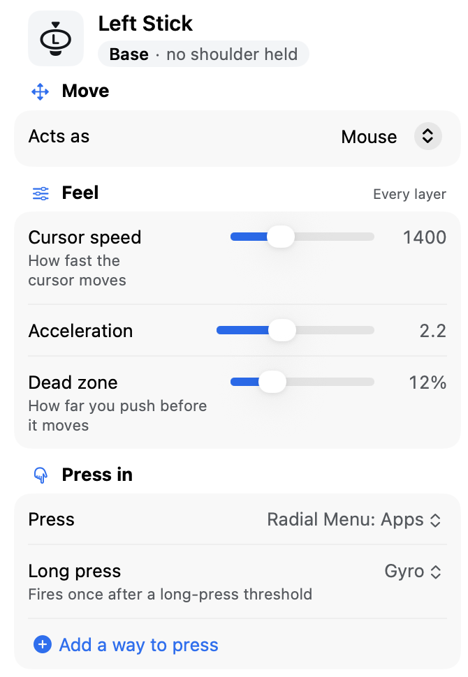
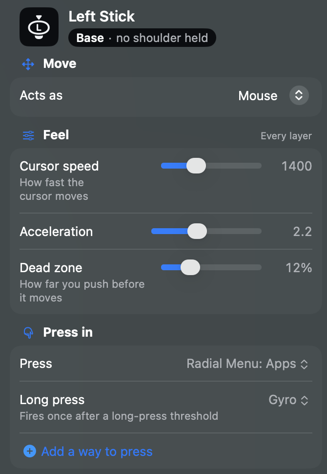

A game controller rests in relaxed hands: no pinch grip, no fine wrist work, no reaching across the desk. If a mouse or trackpad is tiring, painful or hard to reach, Steer turns the controller into a whole way to run your Mac, with a pointer you can slow right down.
Join the launch listWhen it ships: a 14-day free trial, no account, no card. Try it on a good day and a hard one.


This isn't medical advice. Comfort is personal, so the honest test is your own hands. The trial takes no card and no account; keep Steer only if it earns its place.
You may already own the hardware: the controller in the drawer, or a second-hand one. No subscription, and your setup stays on your Mac.
A particular controller, a one-handed layout, a question about your setup: email steer@seanfloyd.dev.
€19.99 once when it ships, after a 14-day free trial.